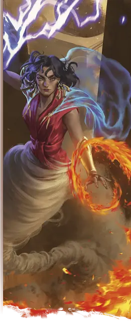

Стихийное насыщение Сонгалы
Songal’s Elemental Suffusion
5 уровень, Преобразование

Время сотворения Действие
Дистанция На себя
Компоненты В, С, М (жемчужина стоимостью не менее 100 ЗМ)
Длительность Концентрация, вплоть до 1 минуты
Классы Волшебник, Друид, Чародей
Вы наполняете себя стихийной силой гениев, получая следующие преимущества на время действия заклинания:
Стихийная невосприимчивость. Когда вы сотворяете это заклинание, выберите один тип урона из следующего списка: Звук, Кислота, Огонь, Холод, Электричество. Вы обладаете Сопротивлением урону этого типа.
Биение стихий. Когда вы сотворяете это заклинание, а также в начале каждого вашего последующего хода, вы выпускаете всплеск стихийной энергии в исходящей от вас 15-футовой Эманации. Каждое выбранное вами в этой области существо совершает спасбросок Ловкости. При провале существо получает 2к6 урона Звуком, Кислотой, Огнём, Холодом или Электричеством (на ваш выбор) и состояние Опрокинутый. При успехе существо только получает половину этого урона.
Полёт. Вы обладаете Скоростью полёта 30 футов и можете парить.
Круговое заклинательство. Если это заклинание сотворяется Кругом, его время сотворения увеличивается до 1 минуты, а длительность становится «Концентрация, вплоть до 10 минут». За каждого участвующего в сотворении второстепенного заклинателя вы можете выбрать по одному дополнительному существу (суммарно не более девяти дополнительных существ); эти выбранные существа также получают преимущества заклинания на всё время его действия. При сотворении заклинания каждый второстепенный заклинатель должен потратить ячейку заклинания 2-го уровня или выше, иначе заклинание проваливается.